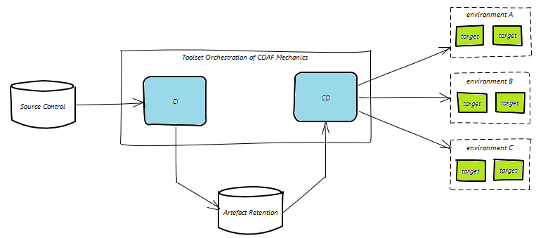

CDAF is a Continuous Delivery Automation Framework which is geared to enterprise Continuous Delivery. The implementation pattern is based on incremental maturity, with clear demarcation between Continuous Integration and Continuous Delivery.
CDAF provides consistency in the solution build, package and delivery mechanics, providing the basis of a code driven delivery, whereby any changes to the methodology are traceable in the source control system. While CDAF focusses on the mechanics of Continuous Delivery, the CI Tools are relied upon for source control integration, artefact retention and providing a graphical user interface.
CDAF was originally develop for Linux with a focus on cross-platform delivery, i.e. Java developed on Windows and delivered to Linux hosts. Configuration and Driver files are the foundation controlling CDAF behaviour. The task execution engine provides a masking language that allows Developers to sculpt a process that can be executed on both Linux and Windows, treating the localhost as a loopback target for delivery testing (SSH/PowerShell). It is the intention of CDAF that the complete end-to-end delivery process can be exercised on the developers workstation. Where complex or more production-like testing is required, CDAF includes a set a common provisioning tasks that can be executed from Vagrant (commonly partnered with VirtualBox).